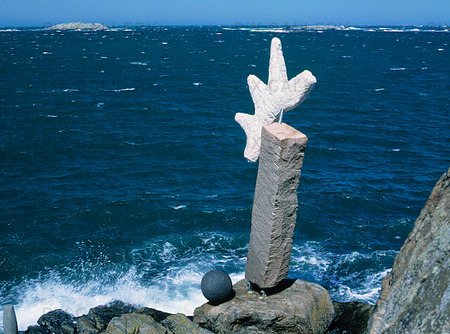

Idag är Klädesholmen inriktat på turism och näringsliv. Turister kommer till Klädesholmen för att få uppleva den vackra ön. På samma gång kanske dom tar sig en lunch på den kända restaurangen/hotellet Salt och sill i den östra hamnen eller på restaurang Kylen i västra hamnen. I västra hamnen finns också det kända konstverket av Claes Hake som många turister passar på att kolla på. Ett par hundra meter ifrån konstverket ligger en tennisbana för dom som är sugna att spela lite, och blir man sugen på en glass så kan man köpa det i hamnkontoret ett par meter bort.
Ön har en hel del badplatser. Den störta av dom är den som ligger alldeles nära stora bron. Den har hopptorn, sandstrand och två bryggor. Intill badplatsen ligger en fotbollsplan där folk brukar spela för att sedan ta sig ett dop i havet. Fotbollsplanen hörde tidigare till KIF (Klädesholmens Idrotsförening) med tillhörande klubbhus. Numera är klubbhuset öns Bibliotek. I källaren finns också ett litet gym.
Varje år anordnar Klädesholmen samhällsförening Sillens dag, som hålls på Sveriges Nationaldag den 6 Juni. Då är det full rulle på ön med massor av folk och olika aktiviteter. Andra stora dagar på Klädesholmen då det kryllar av folk är Samhällets dag, som hålls den första lördagen i Juli, och Tjörn runt, som hålls i slutet av augusti.
Näringslivet på ön är främst i form av sillfabriker. Nu finns det bara ett stycken kvar, som numera sammarbetar under namnet Klädesholmen Seafood AB. Vill man köpa sig en burk sill så gör man det genom att besöka livsmedelsbutiken Ica bojen eller Sillfabriken PK. Frågar man så kan man även få ta sig en runda och se hur dom jobbar i fabriken. Tidigare nämnda Salt och Sill har precis byggt till Sveriges första flytande Hotell och har numera därför öppet året om. Dom har även en bastubåt man kan få hyra.
Sammanställt av Patrik Oleander